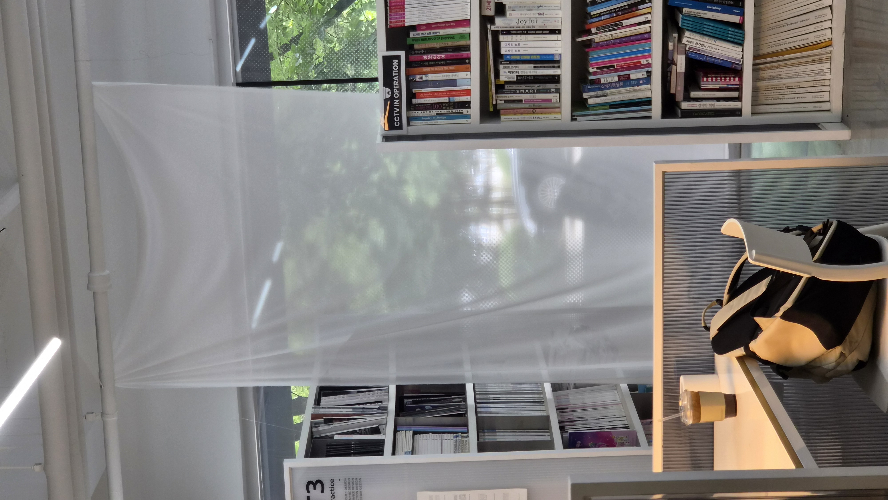
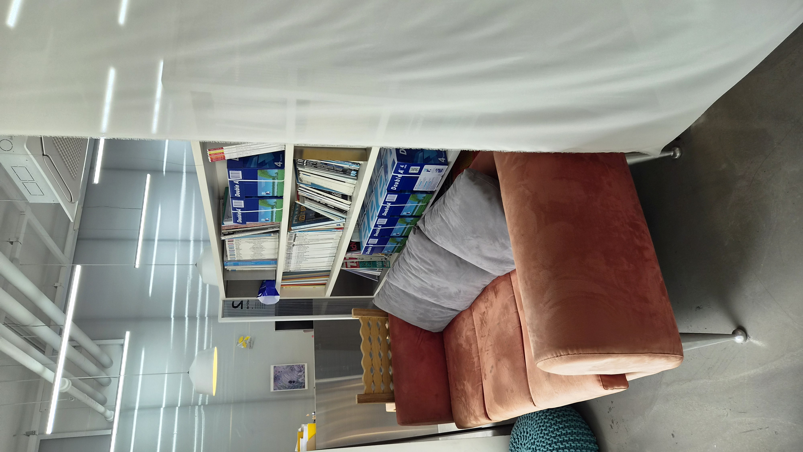
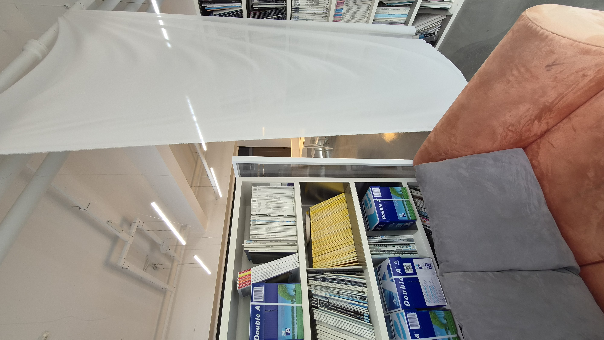
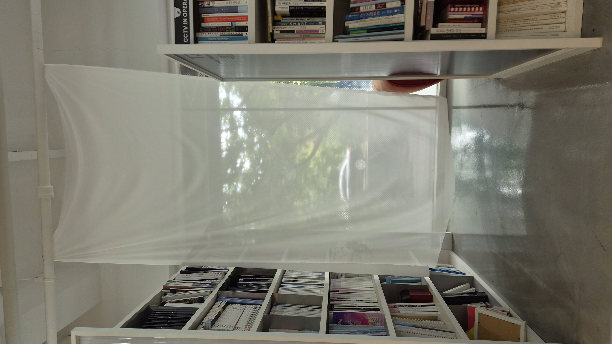

Site Selection.

An sofa facing the windows of the AUDI lounge.
Although this sofa is comfortable, it's hidden behind the bookshelf, and since people don't tend to stay long in this area of the AUDI lounge this sofa isn't used as much as expected.
Ideas.

— What do you want to change, reveal, or make visible?
I want to put translucent fabric to the entrance of the space.
— Why this addition, and not something else?
If the 'familiar' space were covered with fabric, people would notice the change and take a closer look to see what had changed. However, since I considered the glass windows that offer a view of the outside to be one of the key features of the AUDI lounge, I decided to hang a thin, translucent fabric at the entrance that would allow people to see the scenery beyond the windows while still creating a sense of change.
— What impact do you expect it to bring?
I hope this will encourage people to take a closer look at the space by drawing their attention to the fabric, which wasn't originally draped there.
Final Result: Our Old New Shelter




The name "Our Old New Shelter" was chosen with the intention of rediscovering a space that had always been there yet remained hidden.
Put your worries aside for a moment and take a break at this shelter. Experience the sense of separation and novelty created by the semi-transparent fabric, and the movement as it sways in the breeze.